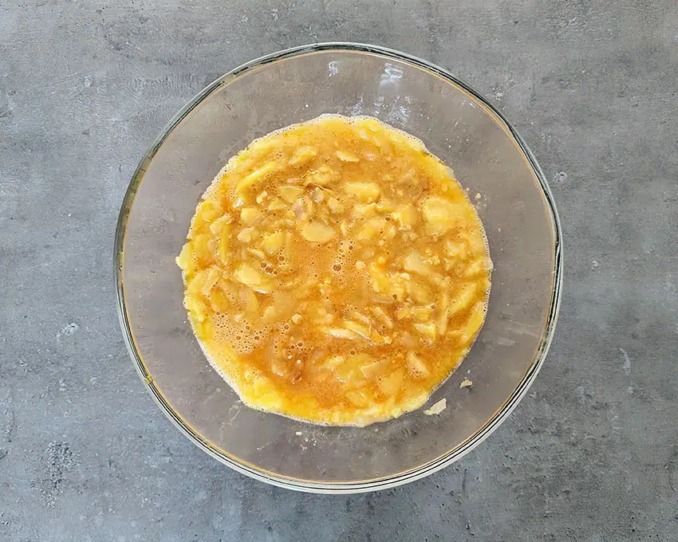
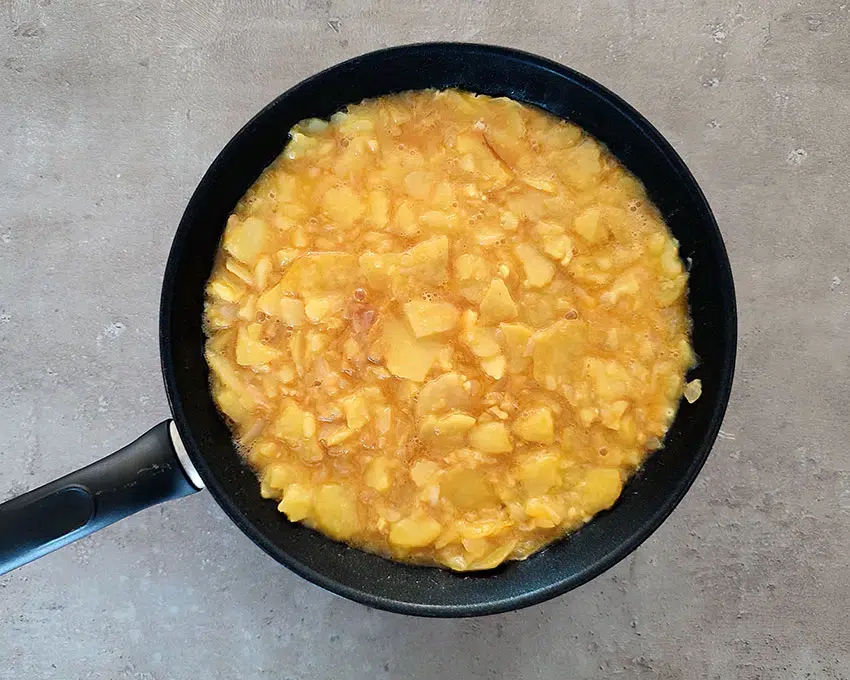
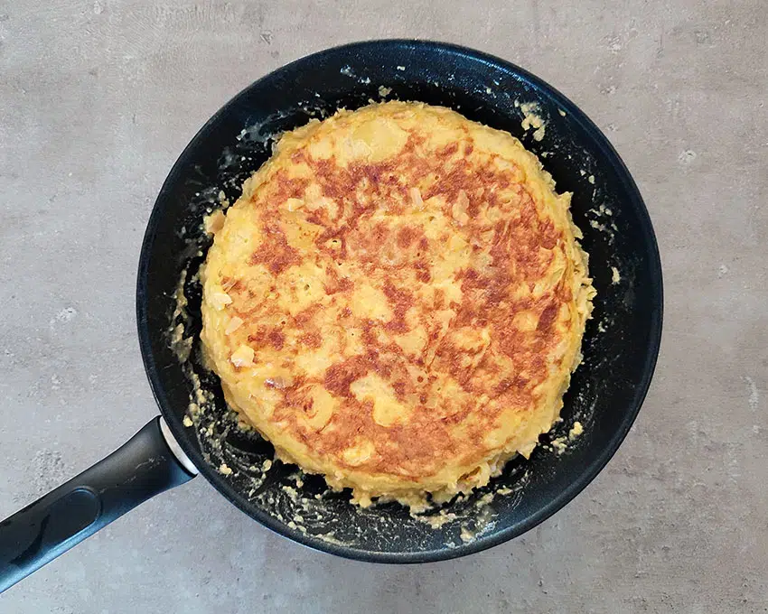

5 huevos
500 g de patatas
1 cebolla (opcional)
Sal
Aceite de oliva virgen extra
Pelamos y lavamos las patatas, las cortamos en rodajas finas al igual que la cebolla si la
queremos añadir.
Ponemos en una sartén y cubrimos de aceite de oliva virgen extra
Dejamos que se pochen a fuego medio-suave hasta que comiencen a dorarse. Sabréis
que las patatas están hechas cuando comiencen a romperse, con la paleta. Para que la
tortilla esté jugosa es importante que las patatas se hagan bien y se confiten, porque no
hay nada peor que una tortilla con las patatas medio crudas. Por lo tanto, paciencia con
este paso.
Las sacamos de la sartén y escurrimos bien. Ponemos en un cuenco grande
Aparte batimos los huevos y los añadimos a las patatas y a la cebolla, añadimos un poco
de sal y mezclamos.
Dejamos un par de minutos que se mezclen bien.
Aquí hay quien prefiere dejar las patatas enteras y quien prefiere machacarlas un poco
con la paleta para que se mezclen bien con el huevo.
Ponemos en la sartén un par de cucharadas de aceite de oliva virgen extra y vertemos
todo.
Al principio rompemos un poco, como si fuéramos a hacer un revuelto, luego
vamos dándole forma por los bordes.
Cuando veamos que ya está cuajada por abajo ponemos un plato o una tapa encima de la
sartén y le damos la vuelta rápidamente.
Ponemos de nuevo la sartén en el fuego y deslizamos la tortilla desde el plato a la sartén.
Dejamos unos minutos más mientras redondeamos los bordes con la espátula 2 o 3 si te
gusta más cuajada, menos si te gusta jugosa para que se termine de hacer y ya tenemos
lista nuestratortilla de patatas.